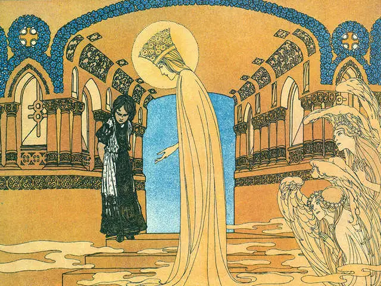

Near a great forest there lived a woodcutter with his wife. He had but one child, a three-year old girl. Now they were so poor that they no longer had their daily bread, and they did not know how they were to feed her. One morning the woodcutter, filled with sorrow, went out to his work in the woods. While he was chopping wood suddenly there stood before him a beautiful tall woman with a crown of shining stars on her head. She said to him, "I am the Virgin Mary, mother of the Baby Jesus. You are poor and needy. Bring your child to me. I will take her with me and be her mother and care for her." The woodcutter obeyed, fetched his child, and turned her over to the Virgin Mary, who took her up into heaven with her. There the child fared well. She ate sweetened bread and drank fresh milk. Her clothes were of gold, and the little angels played with her. When she was fourteen years old, the Virgin Mary summoned her one day and said, "Dear child, I am about to make a long journey. Take care of these keys to the thirteen doors of heaven. You may open twelve of these doors, and behold the glorious things inside, but the thirteenth door, to which this little key belongs, is forbidden for you. Be careful not to open it, or you will be unhappy." The girl promised to be obedient, and when the Virgin Mary was gone, she began to examine the dwellings of the kingdom of heaven. Each day she opened one of them, until she had been to all twelve. An apostle, surrounded by great brilliance, sat in each one. She rejoiced in the magnificence and splendor, and the little angels who always accompanied her rejoiced with her. Now only the forbidden door remained, and she felt a great desire to know what was hidden behind it. She said to the little angels, "I will not open it all the way, nor will I will go inside, but I will only unlock it so that we can see just a little through the crack." "Oh no," said the little angels, "that would be a sin. The Virgin Mary has forbidden it, and it might easily lead to unhappiness for you." To that she said nothing, but the desire in her heart was not stilled. To the contrary, it gnawed away, tormenting her, and would give her no rest. Then one day when the angels had all gone out, she thought, " I am entirely alone now, and I could peek in. If I do so, no one will ever know." She sought out the key, and as soon as she had it in her hand, she put it into the lock as well, and as soon as it was in the lock, she turned it around as well. The door sprang open, and there she saw the Trinity sitting in fire and brilliance. She stayed there a little while, looking at everything in amazement. Then she put her finger a little way into the brilliance, and her finger turned entirely golden. Immediately a great fear fell upon her. She slammed the door shut, and ran away. The fear did not go away, do what she may. He heart pounded furiously forth and would not become still. And the gold remained on her finger as well. It would not come off, no matter how much she washed and rubbed. Not long afterward, the Virgin Mary returned from her journey. She summoned the girl, and asked her to return the keys of heaven. When the girl gave the ring of keys to her, the Virgin looked into her eyes and said, "Have you not opened the thirteenth door as well.?" "No," she replied. Then the Virgin Mary laid her hand on the girl's heart, and felt how it pounded and pounded, and saw well that she had disobeyed her order and had opened the door. Then she said further, "You did not do it for sure?" "No," said the girl a second time. Then the Virgin noticed the finger that had turned golden from having touched the heavenly fire, and knew well that the girl had sinned, and she said a third time, "Have you not done it?" "No," said the girl a third time. Then the Virgin Mary said, "You have not obeyed me, and you have lied as well. You are no longer worthy to be in heaven." Then the girl sank into a deep sleep, and when she awoke she lay below on earth, in the middle of a wilderness. She wanted to cry out, but she could not bring forth a sound. She jumped up and wanted to run away, but in wherever she turned, she was held back by thick thorn hedges which she could not break through. In the wilderness where she was imprisoned there stood an old hollow tree. It would have to serve as her home. She crept inside it when night came, and slept there. And when it stormed and rained, she found shelter inside it, but it was a miserable life, and she cried bitterly when she thought about how beautiful it had been in heaven, and how the angels had played with her.  Roots and wild berries were her only food, which she looked for as far as she could go. In the fall she gathered the fallen nuts and leaves, and carried them into the opening in the tree. The nuts were her food during the winter, and when snow and ice came, she crept under the leaves like a poor little animal, so that she would not freeze. Before long her clothes were ripped to shreds, and one piece of them after another fell off her. When the sun shone warmly again she went outside and sat in front of the tree. Her long hair covered her on all sides like a cloak. Thus she sat year after year, feeling the world's misery and pain. One day, when the trees were once again a fresh green, the king of the country was hunting in the woods. He followed a deer that had fled into the thicket that surrounded this part of the woods. Getting off his horse, he tore the brush aside and cut himself a path with his sword. When he had at last forced his way through, he saw a wonderfully beautiful girl sitting under the tree, covered entirely with her golden hair, down to her toes. Filled with amazement, he stood still and looked at her, then he spoke to her, saying, "Who are you? Why are you sitting here in this wilderness?" But she gave no answer, for she could not open her mouth. The king continued, "Will you go with me to my castle?" To this she just nodded her head a little. The king took her into his arms, lifted her onto his horse, and rode home with her. Arriving at the royal castle, he had her dressed in beautiful clothing and gave her an abundance of everything. Although she could not speak, she was still so beautiful and charming that he fell in love her with all his heart, and it was not long before he married her. About a year later the new queen brought a son into the world. Afterward the Virgin Mary appeared to her in the night when she was lying alone in her bed, and said, "If you will tell the truth and confess that you unlocked the forbidden door, I will open your mouth and give you back your speech, but if you persevere in sin, and stubbornly deny it, I will take your newborn child away with me." The queen was allowed to answer, but she remained obstinate, and said, "No, I did not open the forbidden door," and the Virgin Mary took the newborn child out of her arms and disappeared with it. The next morning when the child was not to be found, it was rumored among the people that the queen was a cannibal and had killed her own child. She heard all this and could say nothing to the contrary, but the king did not want to believe it, because he loved her so much. One year later the queen again bore a son. In the night the Virgin Mary again came to her, and said, "If you will confess that you opened the forbidden door, I will give you your child back and release your tongue, but if you continue in sin and deny it, then I will take this newborn child with me as well." Then the queen said again, "No, I did not open the forbidden door," and the Virgin took the child out of her arms, and took it away with her to heaven. The next morning, when this child had disappeared as well, the people loudly said that the queen had eaten it, and the king's councilors demanded that she should be brought to justice. The king, however, loved her so dearly that he would not believe it, and ordered the councilors, under threat of death, to say nothing more about it. The following year the queen gave birth to a beautiful little daughter, and for a third time the Virgin Mary appeared to her in the night. She said, "Follow me." Taking the queen by the hand, she led her to heaven, and showed her there her two oldest children, who were laughing and playing with the ball of the world. When the queen rejoiced at seeing this, the Virgin Mary said, "Has your heart not yet softened? If you will confess that you opened the forbidden door, I will give you back your two little sons." But for a third time the queen answered, "No, I did not open the forbidden door." Then the virgin let her sink down to earth again, and took away her third child as well. The next morning, when it became known, all the people shouted loudly, "The queen is a cannibal. She must be condemned." And the king was no longer able to hold back his councilors." A trial was held, and as she was not able to respond and defend herself, she was condemned to be burned at the stake. Wood was piled together. After she had been bound tightly to a stake, and the fire was beginning to burn around her, the hard ice of pride melted. Her heart was moved by regret, and she thought, "If only I could confess before my death that I opened the door." Then her voice came back to her, and she cried out loudly, "Yes, Mary, I did it!" Immediately rain began to fall from heaven, and it put out the fiery flames. A light broke forth above her, and the Virgin Mary descended. She had the two little sons by her side, and the newborn daughter on her arm. Speaking kindly to her, she said, "Whoever repents a sin and confesses it will be forgiven." Then she gave her the three children, released her tongue, and gave her happiness for her entire life.